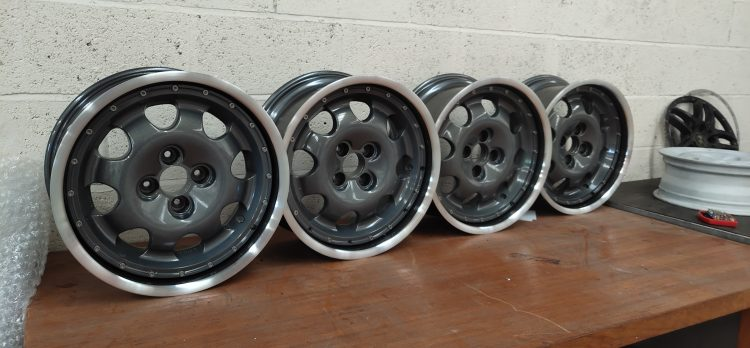
Making custom two-piece wheels is a lengthy process so in this post I’m going to brake it down step by step and provide a hopefully handy reference guide for you to make your own.
DISCLAIMER: I am by no way warrantying or providing any form of guarantee, advice or even suggesting you should build these wheels. These wheels will absolutely not be road worthy and are purely for show purposes only.
In this post I will be focusing on putting Peugeot 15” 205/309 1.9 GTi Speedline faces into BMW 17” Split Rims Barrels but the process should be the same for most cars. As per the previous disclaimer: Anything you build is your responsibility and I am not liable for any damages or harm caused by you tinkering. Still, that said, tinker on brother =D.
Remove the tyres (if any) and remove the inner section from the BMW wheels. Send all of the wheels to be acid dipped / stripped. This will cost around £20 per wheel so in this case we’re doing 10 wheels so roughly £200..
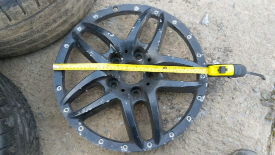
Plasma torching is the process of cutting the face off the barrel. It takes about 15/20 minutes per wheel. One thing to be VERY careful of is the slag which will exit the cut point and can easily splatter the face of the wheel causing additional work later. To resolve this keep a wet rag on the opposite face of the rim of which you are cutting.
Step 1 is marking each wheel with the cut point, here you can see the cut point in red marker.
Step 2 is preparing the wheel by placing it on the wheel and putting aforementioned rag on the opposite side of the cut.
Step 3 is slowly cutting the wheel with a plasma torch.
But why not turn this off on a lathe with a cutting bit? The reason this is a bad idea is you will need to hold both the face and barrel with a chuck and most lathes only have one large chuck. When the face leaves the barrel you would be left with a lot of material wanting to leave the face so it’s just easier to plasma now, remove the mass then turn after.
As per above we turn down both the inner face but also the inside of the outer lip. We turn down the inner face just to make the edge safe to work with and clean. we turn down the inside of the outer lip to ensure our spacer will fit.
It should take about 10 minutes per wheel plus setup time to face off the wheels.
Assuming your 205/309 wheels are in good condition these can now go to the machinist ready for hole drilling and counter-boring.
The 205 inner faces won’t go directly onto the BMW wheels because there are no holes in the face. To put the holes in we’re going to need a machinist and the machinist is going to need a reference file. Machinists mostly work with solidworks files aka DXF. Thankfully you don’t need solid works to make these files, you can use free software called Inkscape.
Basically in Inkscape you will need to make a hoop shape and place the bolt holes and counter bores on different layers. I’m not going to cover the whole process in this blog post but if you want the Inkscape SVG I used then feel free to email me and I will forward it over. That said, your machinist might like files in different formats so it’s critical you speak with them first to see how they want the data. For me I used a robot arm to get exact measurements of bolt locations and hole sizes but this could easily be done using a set of vernier or even a ruler.
Once you have your design I highly recommend creating your spacer next. The whole process of designing your spacer should be about 3 hours of labor.
It is a very good idea to start with scrap/sample pieces before going to Aluminum. For these wheels you will be using 1M x 1M of 10mm aluminum which isn’t cheap, I think for me it was about £250.
I ran my first samples in scrap 2mm mild steel. It took me about 6 revisions to get the holes in the correct location, the correct size and to decide on the depth of the spacer. Thankfully I have a local water jet machine so it wasn’t too time consuming. Once I was happy with my design I was comfortable passing the same DXF over to the machinist for drilling and counter-boring. A cut in 10mm aluminium should take about 40 minutes, expect to pay about £30 per hour of water jet time and probably £40 per hour of labor if you require someone to set the job up for you, handle your material and clean the piece after cutting. Do bare in mind that your spacer depth modifies the offset the wheels on the car. Increasing your spacer depth reduces your offset, we found 10mm was the happy medium for putting these wheels back on 205/309 et al, your mileage will vary! Don’t forget that if you change the depth of your spacers you will need different fitting lengths.
I only zinc primed the spacers because they aren’t visible.
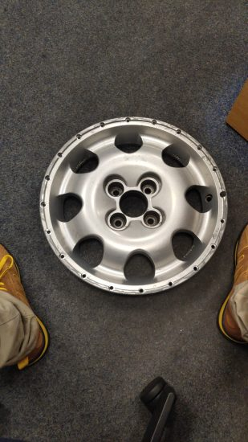
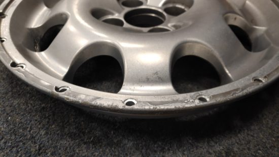
Your machinist will want a DXF with two tool paths. One for the holes and one for the counter-bores. I usually just put them on different layers and in different colors in inkscape then export them. You might want to do this on your 5th wheel, which will be your test/sample/scrap if you get it wrong wheel. A decent machinist will need about an hours setup time and 30 minutes per wheel. Usual machinist and machine time is about 40 GBP so your holes/counter bores should cost around 200 GBP.
Now you have your inner and outer prepared you can offer them up together and ensure all holes line up. Also take this opportunity to test your M7 socket cap bolt fittings. Once I had the wheel assembled I asked a local tyre company to put a scrap 205 40 tyre onto the outer rim and then I was able to test fitment on a car.
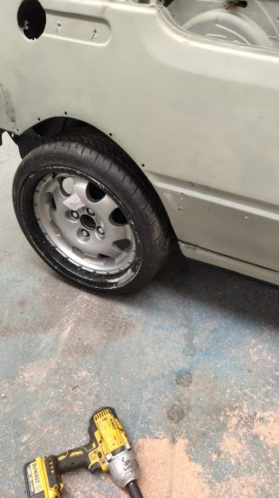
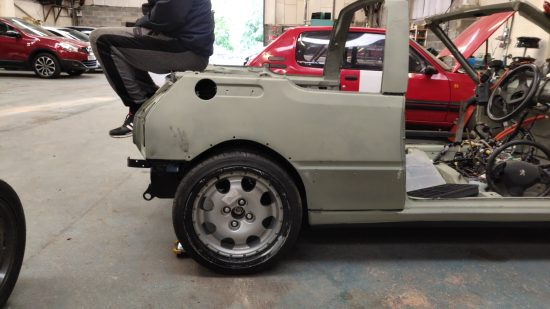
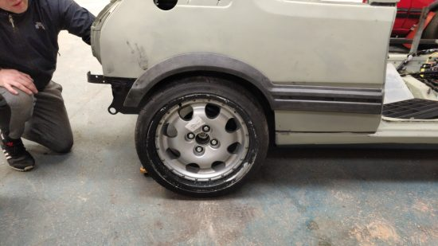
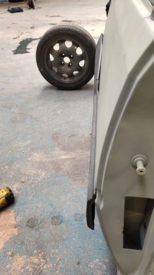
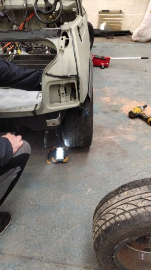
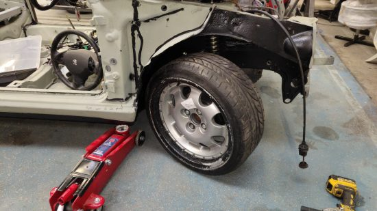
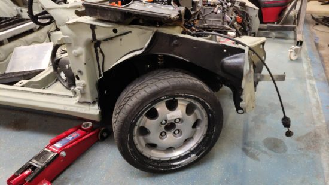
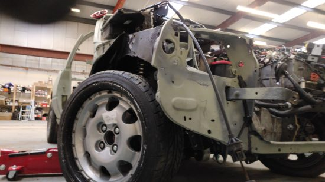
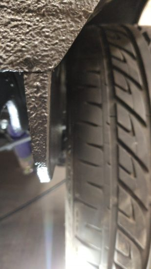
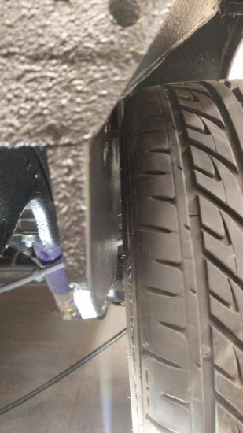
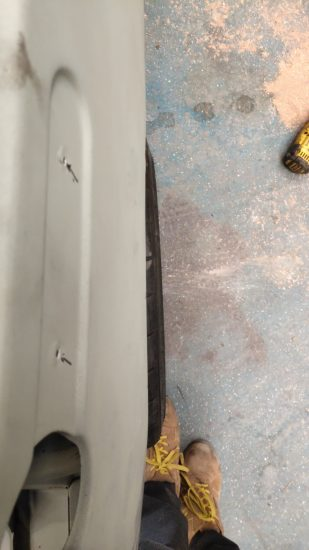
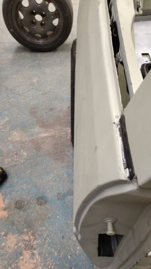
It’s important when test fitting to ensure the wheels sits within the arch without any rubbing on the inner arch but also that you can achieve full lock. Also the 205s often rub on the rear so check the rear by having a mate jump up on and down on the rear boot and ensure it doesn’t touch anywhere. I’m lucky because I have a lot of 205s I can test with all at different ride heights. I found that these wheels fit nicely at 30mm drop but will probably require some rear arch modification (as per the norm of running 205 40 on a 205).
Next step is deciding on a design/color and getting them done! Firstly we decided on a color scheme, in this instance we settled on Goodwood. Goodwood wheels provide an interesting challenge because they have a silver/diamond cut outer rim and the rest of the rim is anthracite gray.
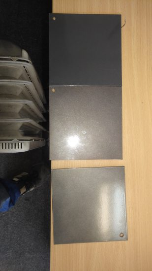
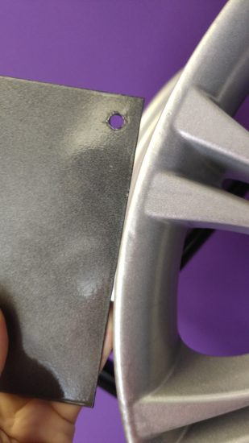
Initially our plan was to do the entire outer barrel in bright silver and the inners in anthracite but we don’t like making our lives too easy and we thought the additional anthracite on the outer barrel would additional depth (which is something I like). I intended to photoshop examples but I was too time invested already in this project so just decided to go for the diamond cutting instead.
Before we could send the wheels to the powder coater we had to do some wheel repair. Thankfully my local friendly machinist was able to do some aluminium welding and then grinding down to fix a very badly damaged edge. This took about 2 hours work.
Once all repairs were done and we had decided on color we went to the local powder coating shop with all the parts and started to get pictures back of the bits as they went through their shop.
I used the same powder coating place to coat all inner and outer pieces but used a different shop for diamond cutting and clear coating the inners.
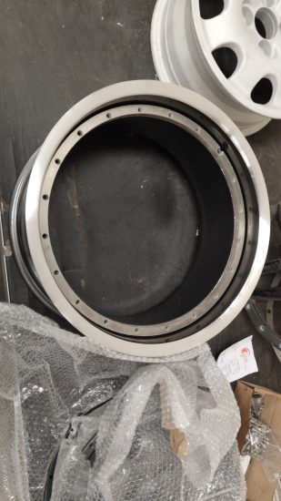
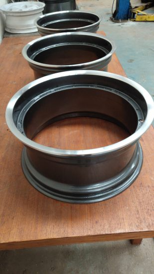
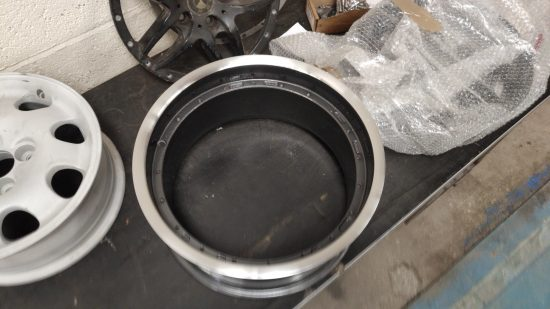
One thing you can spot close up is that there is no definite/exact line for where the diamond cutting ends. This is caused by me asking the diamond cutters to remove as little material as possible and also because normally when you diamond cut a wheel you have an exact face to work the bit to. With these outer wheels the face curves into the barrel wall so it’s hard to get an exact location to stop turning at. You have probably already established that Diamond cutting these wheels caused significant complications!
After such a long road I was happy to get through to assembly..
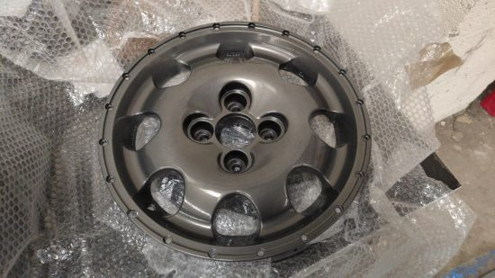
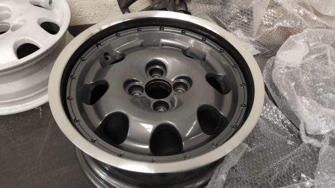
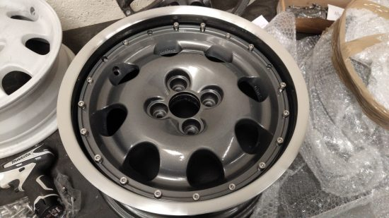
Assembly involved placing the spacers in the outer barrel, placing the inners on the spacers and installing the M7 fittings. Next step is to get them boxed up and take them up to my brother for fitment on his 309 Goodwood :)
Just as a side note at this point: I made the mistake of measuring the entire bolt length and ignored the taper on the bolt where there was no thread. This lead to me getting the wrong size bolts. The actual holes in the base rim have an additional cavity for the center shaft of the bolt and this cavity does not have thread but does have material so you can’t put in a normal bolt. So my learning here is to measure only the thread length of the original bolt and add 10mm to that, don’t measure the entire bolt length.
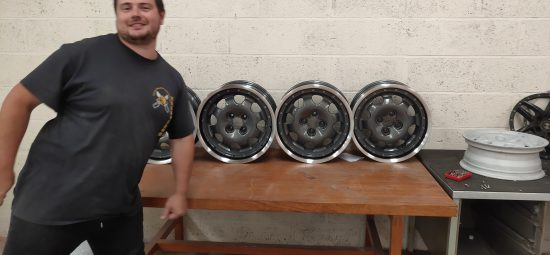
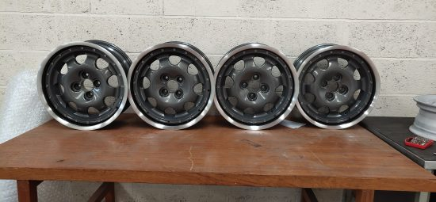
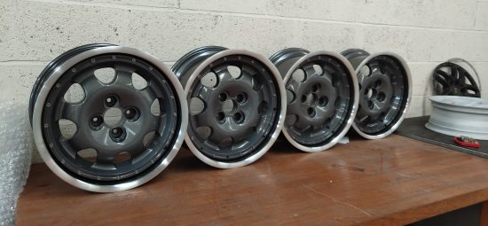
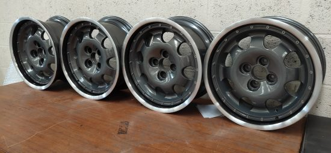
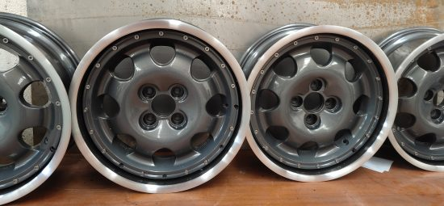
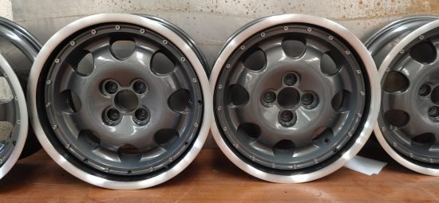
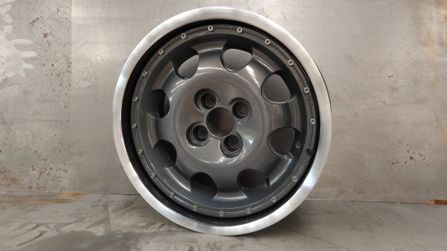
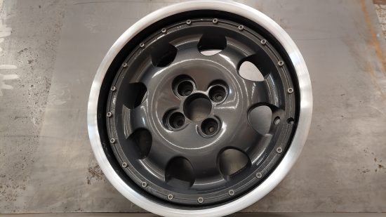
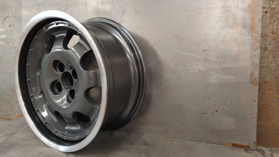
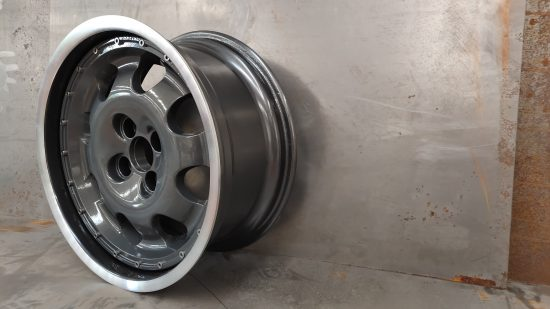
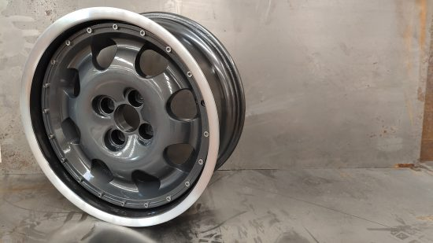
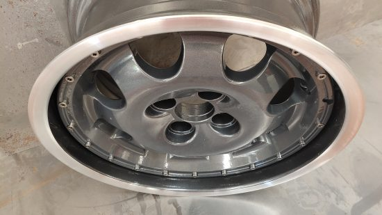
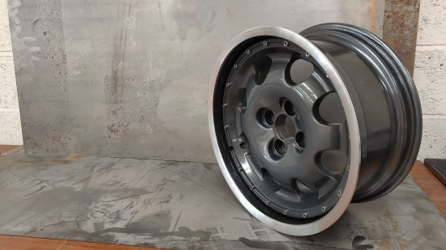
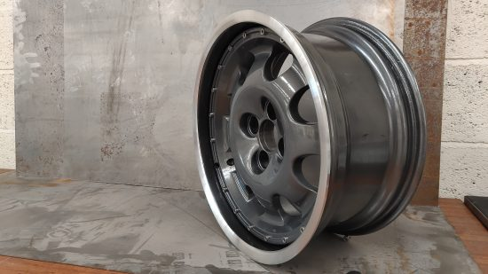
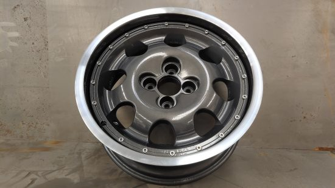
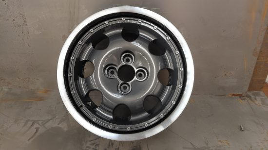
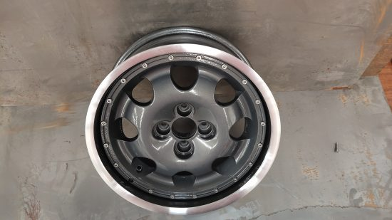
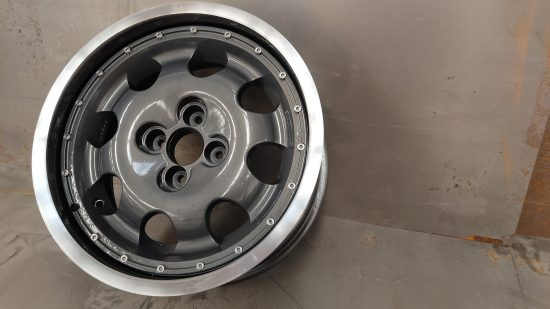
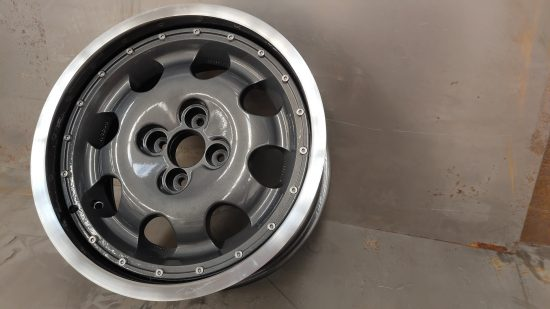
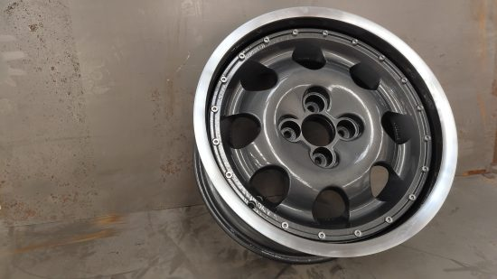
All costs in GBP. This makes assumptions no labour is free. All costs are estimates/rough and will vary depending on your relationships w/ your machinists and suppliers. Labor is estimated at ~£40 per hour.
Spacer Aluminium: £250
Wheel repairs: £200
Water Jet: £200
Test fitting: £80
Final assembly: £200
Plasma cutting Peugeot wheel: £80
Shot Blasting: £100
Powder coating (Due to special powder and 8 parts): £400
Diamond Cut (4 wheels): £300
Fittings (M6 bolts): £211.68
Primer: £5
CNC Machine Time & Machinist: £500
Lathe Time & Machinist: £100
Running between suppliers: £200
Total cost: £2,635.68
I learned a lot during the process.
To conclude, I have completed engine swaps which have been easier jobs than this. It’s a very expensive and quite consuming way to create custom wheels and to be honest, going straight to China for forged custom wheels might just be cheaper and easier! That said, this method does give retro cars the ability to keep their original styling while being able to put more rubber down on the tarmac.
Are the wheels lighter? I’m not sure.
Are the wheels safer? No!
Would you do something like this for me? Yes. But I would want suitable compensation, something close to £1.5k per wheel for a project using the same inner/outer and it would be more for a fully custom project.
Could you do it without the diamond cutting? Yes and it would reduce that cost/complexity.
Did you have to order anything twice because you got it wrong? Yes, the fittings I originally ordered 40, then 30 then 25mm. Thankfully I only ordered a few 40s then by mistake 100 30’s then I finally settled on 25mm.. While 30mm will work in some holes not all holes on the BMW wheels were equal so I had to drop 5mm of thread. Because these wheels are not for driving on I figured that was fine.
Why not just order M7 28mm or something then if they were just a few mm long? Well firstly, you can’t get weird size M7s.. Secondly, it wasn’t the depth that was the issue, it was the final part of the original bolts which had no thread and were just used to located themselves in the hole. The GWR fittings didn’t have this pattern and as such wanted to thread too far into the wheel causing the thread to get damaged and in some cases (this really screwed me over) the fixings would get stuck in the rim only for me to have to angle grind them off.
Did I bodge anything? Yes. On one wheel 3 of the heads of the bolts are fake.
Did I finish them completely with center caps etc? No. I totally forgot about center caps until I wrote this blog post =D.